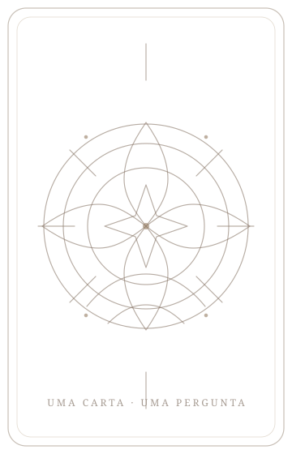
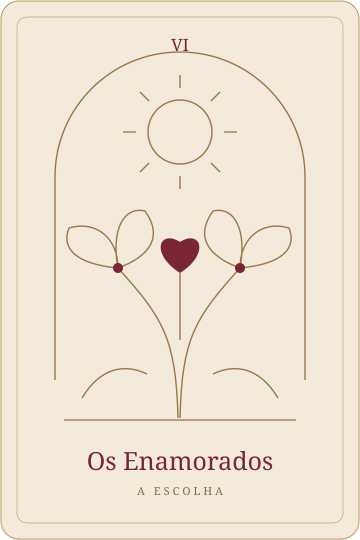

Partilhas o teu tema
Preenches o formulário no site com a pergunta ou situação que queres explorar e o contexto que te fizer sentido partilhar. Não precisas de chegar com a pergunta perfeita.
Uma carta não decide por ti. Pode ajudar-te a escutar-te.
Uma leitura para olhares para o que estás a viver com mais curiosidade e por uma perspetiva diferente. Símbolos, perguntas e espaço para descobrires o que faz sentido para ti.

Carta simbólica · imagem ilustrativaHá momentos em que uma dúvida, uma decisão ou uma situação que se repete ocupa demasiado espaço. Talvez precises de uma pausa para perceber melhor o que já sentes e aquilo que ainda queres explorar.
Uma leitura pode abrir esse espaço: recebes também a minha visão sobre a situação que expões, construída a partir do que partilhas, da tiragem e da minha leitura intuitiva. Uma perspetiva de fora pode ajudar-te a reconhecer algo que, por estares tão dentro da situação, ainda não tinhas conseguido ver.
O caminho e as escolhas continuam a ser teus.
A minha mãe ensinou-me que, quando lançamos uma moeda ao ar para tomar uma decisão, o mais revelador nem sempre é sair cara ou coroa — é perceber o que sentimos quando vemos o resultado.
É assim que vejo o Tarot: uma linguagem simbólica que pode apoiar a reflexão. O sentido de cada carta ganha forma através da pergunta, do contexto, da posição que ocupa e da relação com as outras cartas.
A minha intuição participa nessa interpretação, em diálogo com o estudo dos símbolos e com o que me contas. A tiragem traz imagens e perguntas, mas não leio uma carta isolada nem aplico um significado igual a toda a gente: a leitura também passa pela minha escuta intuitiva do teu campo energético, como fazia nas leituras de Aura. A carta ajuda a dar forma à perspetiva que surge do encontro entre os símbolos, o teu contexto e aquilo que capto de ti. O meu objetivo é ajudar-te a fazer perguntas que talvez ainda não tivesses feito e a escutar o que começa a surgir em ti.
A minha perspetiva, pela minha voz · cerca de 4 minutos
O Tarot é um baralho de 78 cartas ilustradas, organizado em Arcanos Maiores e Menores. Uso as imagens como uma linguagem de reflexão sobre experiências humanas: escolher, começar, criar, estabelecer limites ou atravessar uma mudança.
É a isso que me refiro quando falo de arquétipos: imagens que dão forma a temas que podemos reconhecer na nossa vida. Não precisas de conhecer as cartas nem de ter uma crença específica para explorar o que te fazem pensar ou sentir.
Vê como a mesma carta pode abrir perguntas diferentes consoante o tema.

Os Enamorados · The Light Seer’s Tarot.
Imagem ilustrativa.
O nome pode fazer pensar imediatamente no amor. Mas esta carta também pode abrir uma reflexão sobre escolhas, sobre o que valorizas e sobre como concilias diferentes desejos.
Numa pergunta sobre uma relação, pode ser um convite a olhar para a forma como te ligas a alguém e para aquilo que escolhes cultivar nesse vínculo.
«O que desejo viver nesta relação — e o que preciso de respeitar em mim?»
Também podemos explorar uma tensão: estou a escolher por vontade própria, por medo de perder ou para corresponder ao que esperam de mim?
São exemplos de perguntas possíveis, não uma leitura para quem está a visitar a página. Numa leitura real, considero a tiragem, as outras cartas e o contexto que partilhas. Uma carta, por si só, não determina o que vai acontecer nem o que outra pessoa sente.
Preenches o formulário no site com a pergunta ou situação que queres explorar e o contexto que te fizer sentido partilhar. Não precisas de chegar com a pergunta perfeita.
Escolho a tiragem e faço a interpretação intuitiva das cartas, considerando os símbolos, as suas posições e a relação com o que me contaste. Gravo a leitura em áudio.
Recebes o áudio até 5 dias úteis após a confirmação do pagamento e a receção do teu contexto. Podes parar, voltar a ouvir e refletir sobre o que faz ou não sentido para ti.
«Devo mudar de trabalho?» ou «Vou voltar com o meu ex?» podem ser pontos de partida. A partir daí, podemos procurar o que está por trás da dúvida e aquilo que está ao teu alcance explorar.
A leitura centra-se na tua experiência. Não afirma o que outra pessoa sente ou fará.
Uma interpretação personalizada a partir do tema, da pergunta e do contexto que partilhas.
Para as primeiras cinco pessoas.
Depois, o valor será 88 €.
Começas por preencher o formulário com o teu tema.
Esta é uma leitura em áudio, sem uma sessão ao vivo incluída. Pode ser uma experiência completa por si só. Se depois quiseres aprofundar algum tema comigo, podes conhecer a sessão de alinhamento (e aprofundamento), contratada separadamente.
A leitura não é um diagnóstico nem substitui acompanhamento psicológico, médico, jurídico ou financeiro quando esse apoio é necessário.
Podes começar por aquilo que te está a pedir atenção e dar-te espaço para o olhar de outra maneira.
Quero receber a minha leitura